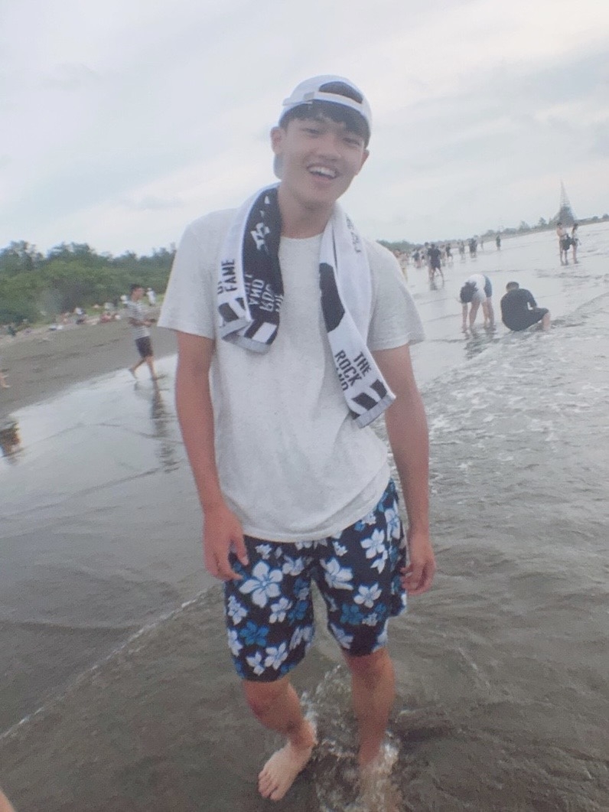

Bootcamp 報名申請

個人簡介
我叫做蔡廷威，畢業於中原大學工業與系統工程學系，畢業後就職友勁科技擔任設計品質的測試工程師，負責驗證交換機的硬體及軟體功能及客戶支援，
在職期間學習了網路七層架構、交換機 ... 等功能，抓封包，操作sprient等網路測試儀器。而當初會選擇交換機測試是因為對於寫程式及網路相關知識有興趣，
但因為大學畢業時還不會寫程式，所以選擇和網路相關產業先進來學習，在就職期間學習了python，對於程式邏輯思考及做出一個小成品、看到寫的程式碼可以運作覺得很有成就感
也利用爬蟲寫了一個爬取股票價格並到價會發送Line通知的小程式，也看完了彭彭老師的前端線上學習課程。最後我將平常我的學習筆記放在下方連結。
為了成為軟體工程師，做過什麼努力？若有具體作品請分享給我們。
在職期間學習交換機硬體及軟體驗證，網路協定及使用VMware做交換機韌體Open source安全性驗證
在Udemy平台上學習完Python課程，學習了包含Data type,Control flow,Functions and Methods,Object-Oriented Programming,Modules and Packages,Error Handling and Exceptions,
簡易Unit Testing,將資料寫入SQLlite資料庫,基礎使用Tkinter及使用Flask製作Server等...,以及看完了彭彭HTML、CSS、JavaScript 網頁前端工程的HTML及CSS部分。
平時使用Notion做筆記學習，在這裡附上完整筆記提供參考
學習時間安排
第一階段預計在職學習
第二階段開始預計離職全職學習
如果參與這個訓練，我將合理分配學習時間，每天深入學習課程內容，同時保留時間進行實作和專案練習，以確保理論與實務相結合。
是否有想要加入的公司？為什麼想加入該公司？
1.Line或是其他風氣自由的外商
2.因為想要可以學習新技術，之前查詢求職資料時有查詢到裡面的工程師說技術跑蠻前面的，公司內部工作氣氛也算是不錯
;而想要加入風氣比較自由的公司是因為比較喜歡上班時間彈性，能夠在計畫時間內在工作完成就好。
請描述一件產生明顯負面情緒的經歷，如何處理該情緒？
經歷:大學期間因為很喜歡音樂，學習了音樂製作也做出了一些作品，但是和某一個主唱合作時，每次他都會遲到，
花時間幫他完成作品時，他也不會
處理方式:和朋友抒發討論後，想了一下對方的立場與為甚麼對方會這樣做，最後和對方談談，跟他說我的感受與想理解他為甚麼這樣做
最後把話說開後解決問題
關於這份申請網頁，分享一個開發時的技術心得。
在製作這份網頁時，最有印象的是學到了CSS的RWD回應式設計及CSS Flexbox,將CSS檔案獨立出來在用CSS選擇器(selector)去做HTML選染 ，
雖然之前有看過其他HTML教學，但是還沒學到CSS的部分。學了基礎的一些HTML,CSS後也發現網頁切版細節其實可以蠻多的，很多TAG標籤，很多
CSS樣式可以去做套用及選擇。
-
之前會先花比較多時間學習Python，因為想要先了解程式邏輯架構及可以寫出一些小東西，也因為覺得Python應用層面
好像比較廣，比較多Module可以使用對於新手學習比較好上手。而學習Python的過程最有收穫的是知道了物件導向的應用，等模組應用
用簡短兩三句話，描述對你而言，最重要的一項人際交往原則。
真誠的對待他人
其他想要對我們說的事情？